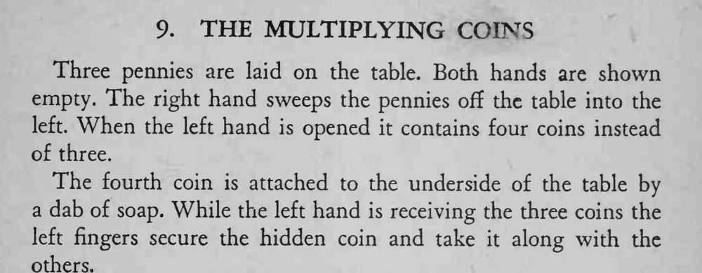

双手摊开是空的，右手把桌上三枚铜币扫进左手，左手摊开却有四枚。
肥皂只要一点，粘住即可；扫币动作要连贯，别让手在桌下停留。

Three pennies are laid on the table. Both hands are shown empty. The right hand sweeps the pennies off the table into the left. When the left hand is opened it contains four coins instead of three. The fourth coin is attached to the underside of the table by a dab of soap. While the left hand is receiving the three coins the left fingers secure the hidden coin and take it along with the others.